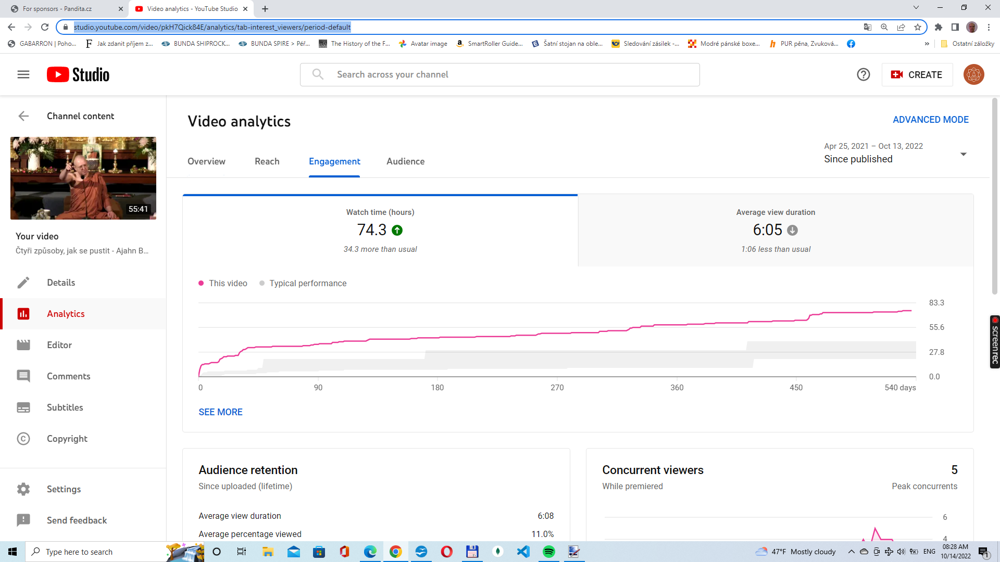
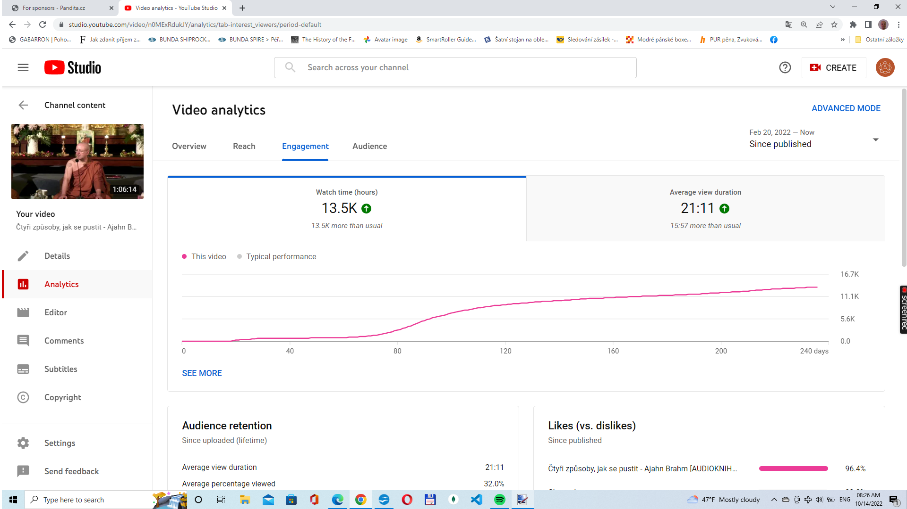

Buddhist Content Creators
My name is Dalibor (my nickname is Borek) and I am a Buddhist volunteer from the Czech Republic. My interest is spreading the Dhamma in my homeland. I wish Buddha´s teachings are more accessible to my fellow citizens.
I am also the owner of a YouTube channel
Jižní buddhismus and I run a small Buddhist charity Dharma Zdarma z.s. (Free Dharma z.s.).
In this article, I would like to share with you my experience. It may be helpful for all the good souls [ souls? ] who are interested in spreading the Dhamma, especially those who are interested in starting a YouTube channel.
Inspiring YouTube channels
Sasana.pl – a very successful Polish YouTube channel, a great inspiration for all aspiring Buddhist YouTubers
Ajahn Brahm česky – this channel is in the Czech language
Аджан Брам UA – this channel is for the Ukrainian audience. Some videos are in Russian language.
Jižní buddhismus – this is my channel. It is also in the Czech language. Radan Kuča, the owner of Ajahn Brahm česky, allows me to re-upload his videos. Therefore, the content of our two channels overlaps.
How to
There is not one best way to create a voice-over. They can be created in a few ways.
Spokój to najwyższe szczęście - Ajahn Brahm [LEKTOR PL]
This video is in the Polish language. The voice of the Polish voice-over artist is calm and doesn’t have much emotion in it. All the emotions are in the original voice of the speaker, Ajahn Brahm.
Nebojácnost | Ajahn Brahm | [české znění] | 21.11.2008
This video is in the Czech language. The sound of the Czech voice-over artist is full of emotions. In addition to that, there are also emotions in the original voice of the speaker, Ajahn Brahm.
Both of the voice-overs above are produced in different ways and both of them are very successful.
Čtyři způsoby, jak se pustit
This video is my work. I have translated the Four Ways of Letting Go by Ajahn Brahm into the Czech language and I asked a local voice-over artist to create an audiobook out of my translation. The length of the audiobook is 1h and 6 minutes. The length of the original video is 55 minutes. That means that the audio and the video cannot be synchronized.
At the beginning of the video, there is an image that I used to explain that the video and the audio are not synchronized. This is not the best way to create videos. Viewers prefer when the video is synced with audio. But the good news is that it also works.
Subtitles versus voice
I should probably also mention that creating audiobooks/voice-overs is much more effective than creating videos with subtitles. For example, I have translated the Four Ways of Letting Go by Ajahn Brahm. Two videos came out of this translation – an audiobook video and a video with subtitles.
As of today (29.10.2022), the audiobook video has more than 38 000 views. The video with subtitles has only 706 views. And that is not the only important difference. The average view duration of the audiobook (21:16) is much longer than the average view duration of the video with subtitles (6:05).
The average view duration is visible also in the images below. You will probably have to zoom in to see the numbers.
 
Permissions
To create a Buddhist YouTube channel in the Czech language, I need permissions. Presently I have a few of them.
Permission of the Buddhist Society of Western Australia to use videos that are available on their YouTube channel.
If you are interested in using their videos for your translation project, please feel free to contact them. They are always happy to meet Dhamma volunteers from all over the world. You can email them at admin@bswa.org.
Permission to use some of the videos available on the Centro Meditazione di Pian Dei Ciliegi YouTube channel. If you want to use their videos for your translation project, feel free to contact them via this email: info@piandeiciliegi.it.
Permission from the Buddhist Maha Vihara in Kuala Lumpur to make an audiobook of Ven. K. Sri Dhammananda´s book, How to Practice Buddhism. The audiobook is already available on my YouTube channel.
The Buddhist Maha Vihara in Kuala Lumpur holds the copyright for K. Sri Dhammanada’s books. If you would like to create audiobooks of his excellent books, please feel free to contact them.
One of the volunteers at the Buddhist Maha Vihara is Mr. Sumanada Premasiri. Presently (29.10.2020), he is the person that is in charge of giving permission to use K. Sri Dhammananda´s books. His email is premaseri@hotmail.com
The Buddhist Maha Vihara can be contacted also via Facebook.
Production
This how a I work when a want to create a video or an audiobook. Usually, I have to do the following.
Find the copyright holder/author and ask him for his permission to use his book/video. I have only good experience with this. All the authors and copyright holders that I have met online were very happy to hear that I want to make use of their books/videos.
We usually discuss the conditions under which I am going to be allowed to use their videos/books.
For example, Mr. Sumananda Premaseri is one of the volunteers at the Buddhist Maha Vihara in Kuala Lumpur. He is in charge of giving permission to use K. Sri Dhammananda´s books. We have discussed a suitable license for the audiobook that I was planning to create. Eventually, we decided to use this text.
…………………………………………
Author: Ven. K. Sri Dhammananda
Copyright holder of the english original:
Buddhist Maha Vihara
123 Jalan Berhala, Brickfields
Wilayah Persekutuan
50470 Kuala Lumpur
website: Buddhistmahavihara.org
Translation: Libor Štichauer, Pandita.cz
Narrator: Luboš Novák
Production: Dharma zdarma z.s.
It is not allowed to sell this audiobook. Access to this audiobook should always be free of charge. However, it is allowed to copy, distribute and share this audiobook via any virtual media. For example, it is allowed to download this audiobook from our YouTube channel and distribute it via any platform for sharing audio and video files (YouTube, Facebook, Spotify, etc). In other words, you are allowed to download this audiobook and upload it on your YouTube, Facebook, Spotify, and so forth.
……………………………………
The second step is translation.
The last step is to find a voice-over artist. The following is a list of websites for freelancers. There are many Czech voice-over artists available there. Voice-over artists for other languages should be available too.
Fiverr.com
Voices.com
voice123.com
voquent.com
The good part is that many of these artists work from home and their services are not expensive.
Audiobooks in English
Many Dhamma books have been written in English but there are not many Dhamma audiobooks available online. Perhaps this article can also inspire those who are interested in spreading the Dhamma in the English language. Making audiobooks in the English language should not be difficult. The tough part is writing a book or translating a book. Finding a voice-over artist is easy.
For more info, please visit the Buddhist Content Creators Facebook Group.
Borek
29.10. 2022
Links:
I also wrote a long article about copyright and CC licences. The name of the article is Audiobooks, CC licenses and sharing the Dhamma.